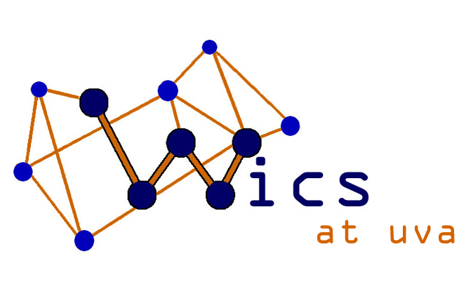

Experience
Microsoft Software Engineer Intern
I worked on the first version of a program onboarding tool as an intern of the Partner Incentives team within MPSIT (Marketing, Products, and Sales IT) at Microsoft. I contributed to frontend and backend design decisions, practiced agile methodology, and worked with a full-time developer to create the first version of this Partner Incentives Program Configuration Tool. My responsibilities included creating the UI for the tool, linking the webAPI and cloud database to the web application, hosted on Azure, and automated testing using Selenium. I taught myself angular.js and engineered the tool using that framework, along with SQL and C#. The estimated business impact of this tool is $2 billion. Working at such a big company provided me many opportunities to learn about current technology trends and try out new things. I even drove a wheelchair just with my eye movement!

22seven Web Intern
22seven is a finance monitoring web and mobile application based out of Cape Town, South Africa. For four weeks, I interned at 22seven and redesigned their blog. I added functionality, such as search, categorization, and subscription. While their web application is based in Ruby on Rails, a language I had learned prior to interning, I worked primarily with php and wordpress, along with CSS for styling. The result of my work can be seen at blog.22seven.com. Throughout the four weeks, I worked closely with 22seven's front-end designers and human resources staff. I learned to implement the ideas and needs from the HR staff with the restrictions from the front-end designers and the limitations of the source code. I also experienced analyzing User Experience and ensuring accessibility and intuitiveness in app design. This experience allowed me to combine my strengths in computer science and cognitive science to produce a tangible result for a successful company, something that I had not done before.
TEDxUVA
I am a founding member, past logistics committee chair, and current secretary of TEDxUVA, an indepently organized TED event. Each year, the Organizing Committee of TEDxUVA plans and executes a Student Speaker Competition to select UVA students to speak at our annual TEDxUVA conference. As the logistics committee chair, I led a team of six in choosing and obtaining a venue, facilitating the design and implementation of the stage design, and coordinating the details of the event. The third annual TEDxUVA conference will be held in February or March 2015. Throughout the past three years, I have played an instrumental role in forming a strong foundation for TEDxUVA so that it can continue to thrive after the founding members graduate. This process has involved significant development of strategy and vision, as well as specific documentation of processes to ease the transition of others into leadership roles for the organization. To learn more about TEDxUVA, visit www.tedxuva.com.
Women in Computing Sciences at UVA
I am a founding member and the webmaster for WiCS at UVA, a club focused on encouraging women to join computing majors and disciplines. We hold events at UVA for current students and also for high schoolers in the area to cultivate an interest in technology. I also act as a mentor to a youunger UVA student, which involves meeting with her to help her in class selection, internship hunts, and general college advice.
ideaventions Lab Leader
I worked at ideaventions, a discovery lab for kids, during the summer of 2013. Each week, ideaventions hosted themed science and technology related day camps for elementary school aged students. Prior to the first camp for the summer, I helped to improve the weekly lesson plans and design a new camp theme. To do so, I listed goals for each camp and strategized the best way to accomplish each one. I independently taught labs to groups of eight to ten campers once the camps began. While teaching, I often had to quickly adapt lessons based on the number of students who were absent, what each student was specifically interested in, and various time constraints. I learned to think quickly, plan efficiently, and prioritize to ensure the best experience for all. For more information about ideaventions, check out www.ideaventions.com.
Honor Support Officer
The University of Virginia holds honor in high regard and in turn has a strict and valued honor code. As an Honor Support Officer for the system, I investigate cases and represent students or reporters at trial. In the over fifteen cases I have taken, I have learned the importance of frequent communication and the necessity to gauge the understanding of others. I work closely with other students, as well as University faculty and various community members throughout the case process. In the spring of 2014, I was selected from over 70 members to be a Senior Support Officer. I helped run the recruitment and selection process for the new Support Officer class and am now training the new members. With the other Senior Support Officers, I improved the training curriculum and am now implementing our changes. Additionally,I was chosen to be Pre-Trial Coordinator. For this position, I facilitate pre-trial conferences, during which each side's counsel presents motions regarding what evidence and testimony shall be permissible in trial. I then lead a discussion among the pre-trial panel to determine what information is permitted for trial. Outside of case processing, I am invovled in various educational efforts aimed at increasing the student body's understanding of the Honor System. In particular, I am a member of a Faculty Outreach educational group, through which I am helping to plan an event for new faculty members as well as create a system for professors to better inform their students of the group-work policy for each assignment.
Academics
Courses
- Programming Languages for Web Applications
- Advanced Software Development
- Programming and Data Representation
- Computer Architecture
- Discrete Mathematics
- Information Retrieval (currently)
- Algorithms (currently)
Skills
- Java
- C++
- Javascript
- angular.js
- php
- jQuery
- Python
- HTML/CSS
- Ruby on Rails
- Github
- Selenium Automated Testing
Leadership
- Teacher's Assistant: Programming Languages for Web Languages, Intro Computer Science
- Senior Support Trainer: UVA Honor System
- Webmaster: Women in Computing Sciences at UVA
- Logistics Committee Co-Chair: TEDxUVA
- Website: TEDxUVA